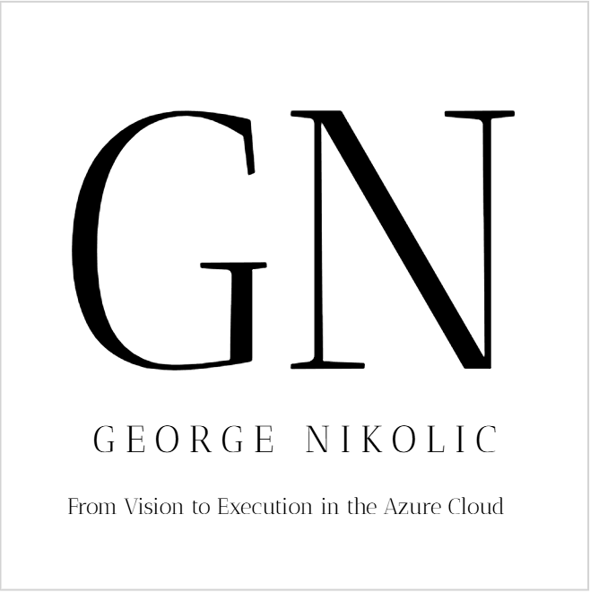

George Nikolic — Cloud & Security Consulting
I'm a Software Architect with years of experience building large‑scale systems. I help teams design Azure serverless systems and secure them with OAuth/OIDC.

Services
Azure Serverless Architecture
Consulting to design or refactor event‑driven systems on Azure that scale with minimal ops. I bring ready‑made templates for common serverless problems, and my team installs and customizes these architectures to fit your exact use case.
- Azure Functions, Event Grid/Hub, Durable patterns
- Pre‑built templates for typical workloads (ingestion, scheduling, workflows)
- Cost‑efficient, resilient designs
- CI/CD and observability built‑in
Security & OAuth
Consulting on identity and access architecture that balances user experience and security.
- OAuth 2.0 / OIDC, MSAL, IdentityServer
- Token flows, scopes, and API protection
- Best‑practice hardening and compliance
Azure Architecture Design
Share your problem space. I evaluate trade‑offs and recommend a practical Azure architecture.
- Problem framing and requirements clarification
- Solution options with trade‑offs and costs
- Recommended architecture and delivery roadmap
Case Studies
View allPayments Platform Scale-Up
Migrated to event-driven architecture; 99.99% availability and 40% cost savings.
Read caseB2B SaaS MVP to GA
Delivered v1 in 8 weeks; onboarding time down 60% with self-serve flows.
Read caseData Pipeline Reliability
Rebuilt ingestion with idempotency and monitoring; reduced incidents by 90%.
Read caseProducts
ExploreReal-Life SWE Internship Simulation
Work a production-like Azure system. Real tickets, CI/CD, incidents, certificate.
View programEngOps Toolkit
A set of templates and scripts to bootstrap CI/CD, observability, and release practices for new teams.
Startup Metrics Starter
Plug-and-play analytics definitions and dashboards for early-stage SaaS tracking activation, retention, and revenue.
Latest Posts
View allContact
Interested in working together? Email me with a short note about your context, timeline, and goals.
nikolic@gmail.comTypical Engagements
- Advisory: 2–4 hours/week
- Project-based: 4–20 weeks
- Fractional: 1–3 days/week